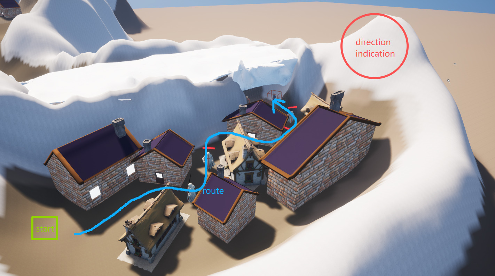
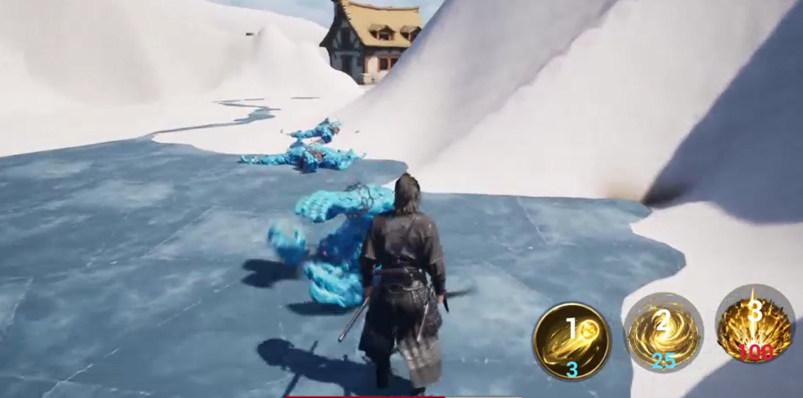
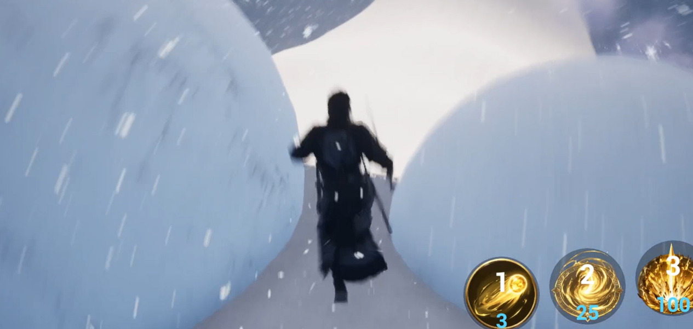

The Wrath of Gonggong
A third-person, single-player RPG level and gameplay prototype. Players investigate a disturbance on Mount Buzhou, moving through villages, mountain passages, an avalanche escape and a final boss encounter.
Design Process
I connect the intended experience to spatial decisions, then use playtest observations to choose changes and record what the evidence supports.
Design Intent
What player experience should this level create?
Spatial Plan
Routes, landmarks, encounter spaces and the conditions that change how a tool is used.
Playtest Diagnosis
What did players misunderstand, miss, rush, avoid, or exploit?
Iteration Evidence
Document the problem, the change, its tradeoff and what still needs testing.
1. Design Intent
I wanted a familiar tool to gain new uses as the surrounding conditions changed. Ice creation first solves a water crossing, then becomes a route choice, an escape tool and a way to maintain safe footing during combat.
The main route is linear. Local choices affect the route, later dialogue or available combat advantages; they do not create separate main storylines.
2. Level Flow

| Area | Player activity | Design purpose |
|---|---|---|
| Starting village | Movement and combat | Buildings define the route; the distant mountain is intended as a directional landmark. |
| Cave pool | Acquire and try the relic | Learn ice creation without combat or pursuit; rescuing the child is optional. |
| Taoyuan waters | Choose a bridge or ice route | Encourage voluntary reuse of the tool and exploration for golden offerings. |
| Taoyuan village | Resolve an encounter | Return to combat and reveal the background; rescuing the child changes the explanation. |
| Blizzard passage | Navigate reduced visibility | Ground cues guide movement while the change in visibility builds tension. |
| Sheltered valley | Fight three trolls | Survivors grow stronger; a cinematic knockback leads into the escape. |
| Avalanche and river | Escape and cross water | Apply the familiar tool under pursuit pressure. |
| Boss cave | Manage footing and attacks | Combine ice creation, positioning and the offerings collected earlier. |
Flow reconstructed from the current build and development notes.
3. Teaching and Reusing Ice Creation
Cave pool

Recognise the water obstacle, place ice and stand on it to cross. Dialogue discourages wading; the exit provides a destination.
Taoyuan waters

Follow the bridges or create a more direct route across the water. Golden offerings encourage exploration and later provide a way to weaken the boss.
Avalanche river

Cross the river before the avalanche catches up. A riverbank ice block recalls the tool, while the distant cave indicates the destination.
Boss cave

Create safe footing as terrain collapses and water penalises the player. Fit ice placement around movement, attack warnings and combat openings.
All three testers used the relic to cross water after trying it, and participant A particularly enjoyed ice traversal. These observations provide initial support for the mechanic; the four stages describe my intended progression, not a measured learning curve.
4. External Playtesting
Three participants with different levels of gaming experience tested V0.1 on 28 August 2026. I reviewed recordings and feedback, then compiled the written summary retrospectively.
- A / Extensive experience: Enjoyed ice traversal, but repeatedly tried to jump through the avalanche and criticised the overall polish.
- B / Moderate experience: Pulled trolls out of the encounter and triggered a progression failure. Bypassed terrain on the first run, then completed the intended flow on a repeat V0.1 run without pulling trolls out.
- C / Limited experience: Used the core mechanic and completed the level, but reported unclear goals and a feeling of being pushed through the experience.
These are qualitative observations from a small sample. B's replay used the same V0.1 build and is not evidence of improvement after the changes.
5. Iteration: Containing the Troll Encounter


Observed problem. Leaving and re-entering the encounter could prevent the final cinematic and transfer to the avalanche section, blocking normal progression.
Decision and tradeoff. I added an ice wall that activates during combat and disappears when the final cinematic starts. It blocks the observed route to the failure, at the cost of retreat freedom. I did not isolate the internal state failure, so this is a containment measure.
Verification. On 7 September 2026, I tested exits, slopes, jumping and attacks in both the editor and packaged V0.2. The boundaries held and subsequent progression worked within these checks. External retesting remains pending.
Original evidence: participant B, first run, 09:20–10:35.
6. Iteration: Clarifying the Avalanche


Observed problem. A moved towards the avalanche and tried to jump through the gaps. Its appearance suggested a route, while a continuous hidden trigger defined the failure area.
Change. I increased snowball size and density to make the threat appear continuous and bring its appearance closer to the implemented rule.
Verification and limit. Developer tests on 7 September 2026 confirmed the change appeared and the flow remained completable in the editor and packaged V0.2. Whether unfamiliar players understand it more readily still needs an external test.
Original evidence: participant A, 08:58–09:16, supported by discussion.
7. Results and Reflection
The prototype now connects the opening village to the boss and ending. Testing showed that route completion alone does not establish understanding: C knew where to go but was unsure why; A inferred an action from misleading visual gaps; B exposed a failure outside the intended combat boundary.
My next priorities are to observe unfamiliar players at the revised avalanche, clarify the opening objective and check whether players can explain it, and investigate encounter state and reset logic if the level grows. The experience retains a strongly directed flow and prototype-level polish.
8. My Contribution and Asset Credits
I designed the terrain, spatial layout, gameplay systems, encounters, boss fight and narrative flow. I implemented and integrated the interface, cinematics and gameplay using Blueprint and C++, with AI-assisted technical guidance and debugging. I was responsible for design decisions, integration, testing and final validation.
Character meshes are licensed third-party assets. Environment assets are primarily licensed assets arranged within my terrain and level compositions. Animation, effects, textures and materials combine licensed assets with work I created or modified. Audio and music came from AI tools or asset sources and were selected and integrated by me.
The design originated in my work on an unreleased commercial project. This portfolio version was independently rebuilt from the ground up without proprietary project assets or confidential content. Its documentation was rewritten for the reconstruction.